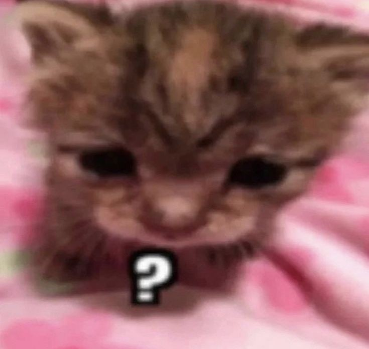
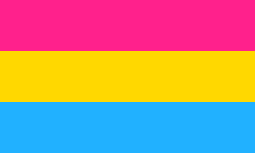
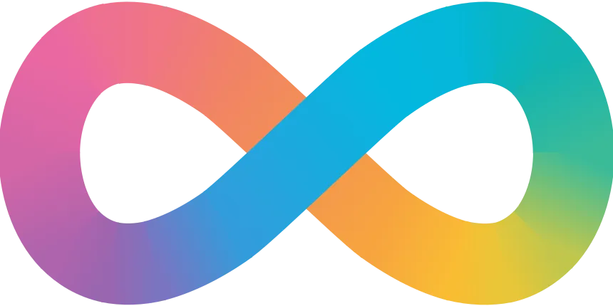

Nicholas Navarro
estudante neurodivergente sem energia;
ad astra
Github
Séries/Filmes Favoritos
RWBY
Percy Jackson
Steven Universe
Músicas Favoritas
this is what falling in love feels like - JVKE
all the kids are depressed - Jeremy Zucker
Complicated - Avril Lavigne
 